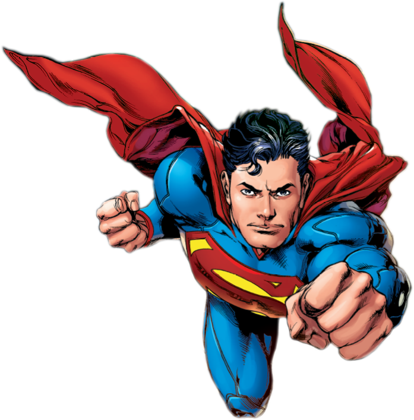

Суперме́н(англ. Superman — надлюдина) — супергерой, персонаж коміксів, які випускаються компанією DC Comics. Вигаданий Джеррі Сігелом і Джо Шустером та проданий компанії Detective Comics (пізніше DC Comics). Персонаж вперше з'явився на сторінках журналу «Action Comics» #1 (червень 1938-го), а згодом і в різних радіопередачах, телевізійних програмах, фільмах, на газетних шпальтах та у відеоіграх. Супермен вважається іконою американської культури, яка відображає уявлення про справедливість. Своїм успіхом персонаж допоміг створити жанр супергероїки і зайняв першість серед інших супергероїв. Оригінальна історія розповідає, що Супермен є останнім вцілілим жителем планети Криптон, що немовлям потрапив на Землю. Живлячись силою Сонця, яскравішою за зірку рідної планети, він набув надлюдських здібностей. З їх допомогою Супермен бореться зі злом, що загрожує Сполученим Штатам, Землі та усьому Всесвіту.
 Криптоніт (англ. Kryptonite) — вигадана кристалічна радіоактивна речовина, яка фігурує у всесвіті DC Comics, що виникла в результаті руйнування планети Криптон. Криптоніт знаменитий Криптоніт (англ. Kryptonite) — вигадана кристалічна радіоактивна речовина, яка фігурує у всесвіті DC Comics, що виникла в результаті руйнування планети Криптон. Криптоніт знаменитий завдяки тому, що є єдиною слабкістю Супермена та інших криптонців — він здатний впливати на них, але вплив відрізняється залежно від кольору мінералу. Завдяки популярності Супермена слово «криптоніт» багато в чому стало поширеним аналогом виразу «ахіллесова п'ята»[1]. Вперше з'явився в серії радіошоу, присвячених Супермену. Найчастіше показується в коміксах і кіно в зеленій формі, яка позбавляє героя сил і може вбити його.завдяки тому, що є єдиною слабкістю Супермена та інших криптонців — він здатний впливати на них, але вплив відрізняється залежно від кольору мінералу. Завдяки популярності Супермена слово «криптоніт» багато в чому стало поширеним аналогом виразу «ахіллесова п'ята»[1]. Вперше з'явився в серії радіошоу, присвячених Супермену. Найчастіше показується в коміксах і кіно в зеленій формі, яка позбавляє героя сил і може вбити його.
Криптоніт (англ. Kryptonite) — вигадана кристалічна радіоактивна речовина, яка фігурує у всесвіті DC Comics, що виникла в результаті руйнування планети Криптон. Криптоніт знаменитий Криптоніт (англ. Kryptonite) — вигадана кристалічна радіоактивна речовина, яка фігурує у всесвіті DC Comics, що виникла в результаті руйнування планети Криптон. Криптоніт знаменитий завдяки тому, що є єдиною слабкістю Супермена та інших криптонців — він здатний впливати на них, але вплив відрізняється залежно від кольору мінералу. Завдяки популярності Супермена слово «криптоніт» багато в чому стало поширеним аналогом виразу «ахіллесова п'ята»[1]. Вперше з'явився в серії радіошоу, присвячених Супермену. Найчастіше показується в коміксах і кіно в зеленій формі, яка позбавляє героя сил і може вбити його.завдяки тому, що є єдиною слабкістю Супермена та інших криптонців — він здатний впливати на них, але вплив відрізняється залежно від кольору мінералу. Завдяки популярності Супермена слово «криптоніт» багато в чому стало поширеним аналогом виразу «ахіллесова п'ята»[1]. Вперше з'явився в серії радіошоу, присвячених Супермену. Найчастіше показується в коміксах і кіно в зеленій формі, яка позбавляє героя сил і може вбити його.